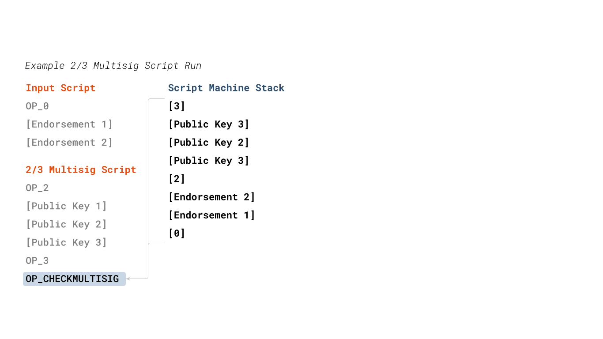
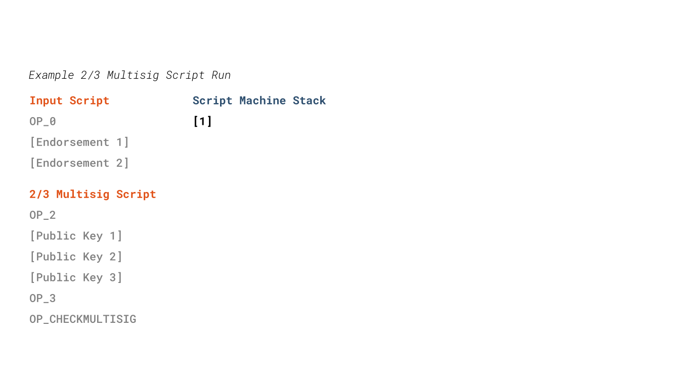
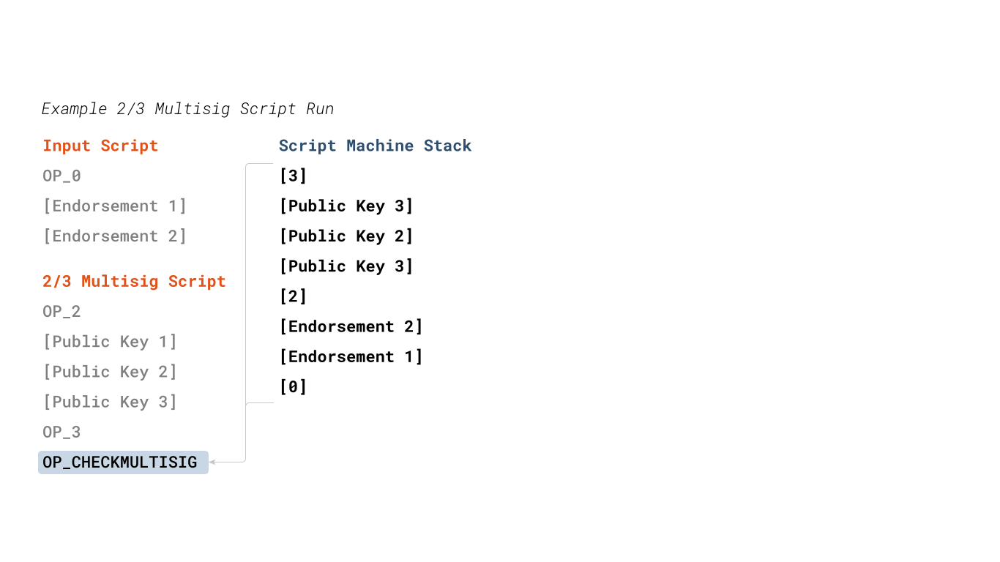
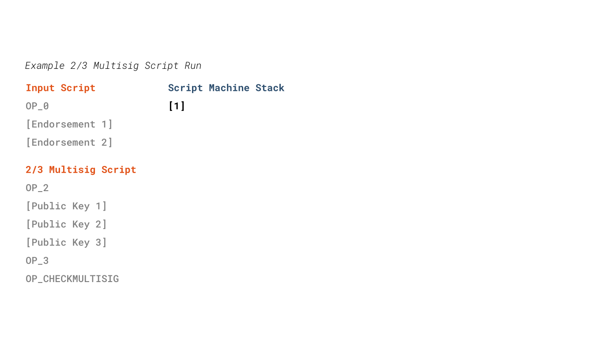
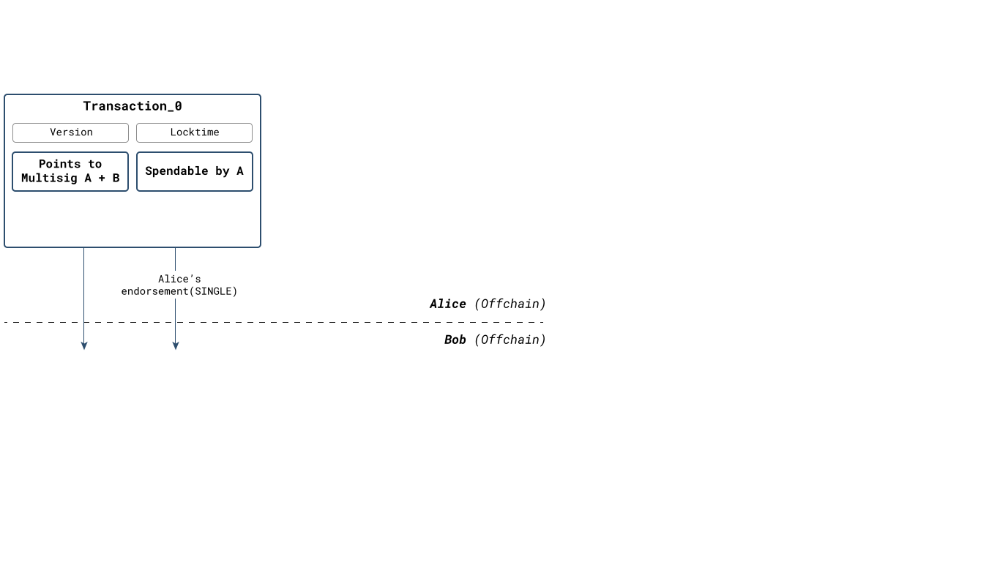
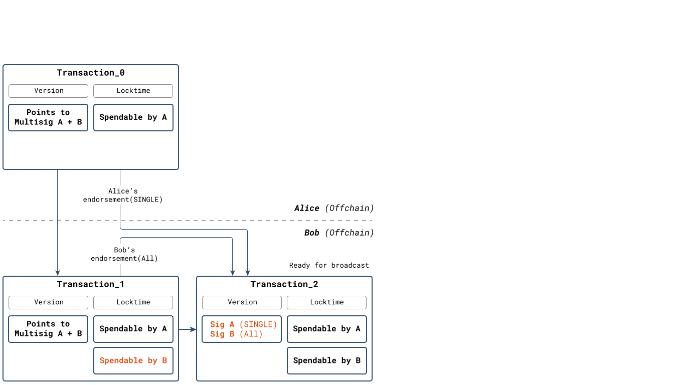
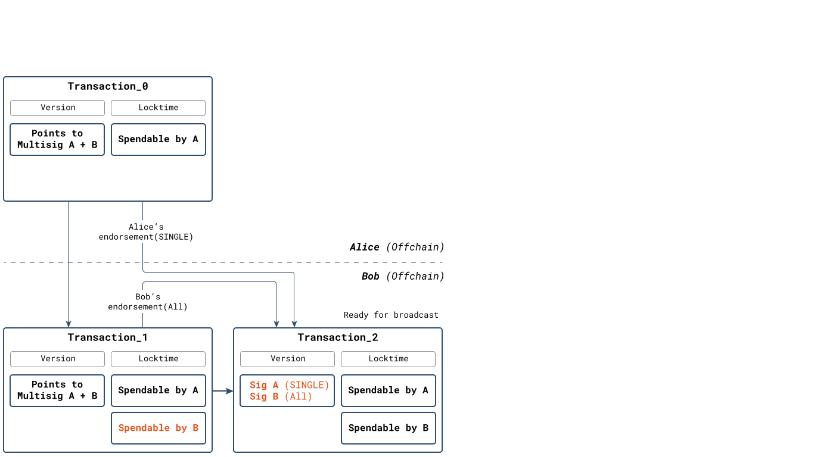
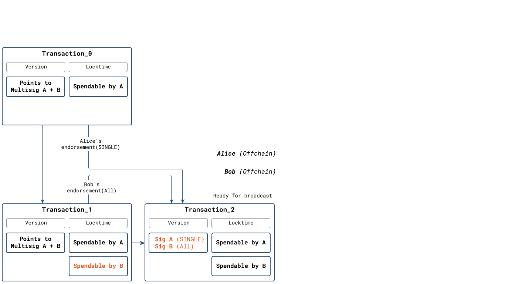

Bitcoin Multisig Script


 



- N-of-M multisig output script
- Requires n endorsements from
m possible signers. - Multisig requires extra op-code
- Multisig consumes one extra op_code.
- This op_code has no functionality.
- Requires hardfork to fix this bug.
- Multisig usually wrapped in P2SH/P2WSH
- See sections on P2SH and witness transactions.
Example: Multisig Script Signing

 


-
Two parties spend a 2/3 multisig output
- 1) Alice builds & signs transaction.
- Transaction only includes her an output spendable by herself.
- 2) Bob gets endorsement & Alice's pubkey.
- Public key allows bob to reconstruct transaction which Alice signed.
- 3) Bob adds his output and signs.
- 4) Bob adds endorsements to transaction.
- Completed transaction spending the multsig output can now be broadcast.
to their respective outputs.